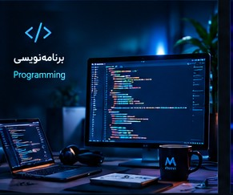
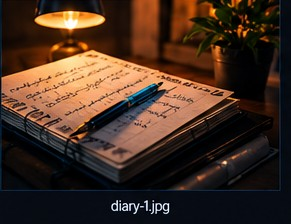

به دنیای منِ مجازی خوش آمدید...
Welcome to My Virtual World
محمد جواد محمودی
Mohammad Javad Mahmoudi
رویاها، برنامهها، تجربهها و مسیر واقعی من...
همه در یک جا.
منِ مجازی
My Virtual Self
↓
Scroll Down

درباره من
About Me
سلام، من محمد جواد محمودی هستم.
علاقهمند به تکنولوژی، یادگیری، مدیریت و تجربههای واقعی زندگی و کار.
مسیر کاری من در حوزه تکمیل و بستهبندی و سپس مدیریت انبار شکل گرفته است و در «منِ مجازی» قصد دارم بخشی از تجربهها، آموختهها و مسیر خودم را ثبت کنم.
انبارداری
Warehouse Management
مدیریت
Management
یادگیری
Learning
حوزههای من
My Main Areas
انبارداری
Warehouse Management
مطالب آموزشی و کاربردی درباره اصول و مدیریت انبار.
تجربه من در انبار تکمیل
My Warehouse Experience
تجربههای واقعی من از مسیر کاری، مدیریت انبار و فعالیتهای روزانه.

دفتر خاطرات
My Diary
آخرین نوشتههای من
جایی برای ثبت تجربهها، اتفاقات، فکرها و لحظههای زندگی.
مشاهده نوشتهها ←
تماس با من
Contact Me
اطلاعات تماس و شبکههای اجتماعی در مرحله بعد تکمیل میشوند.